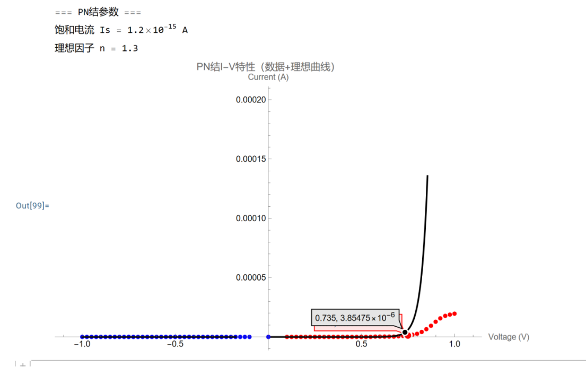
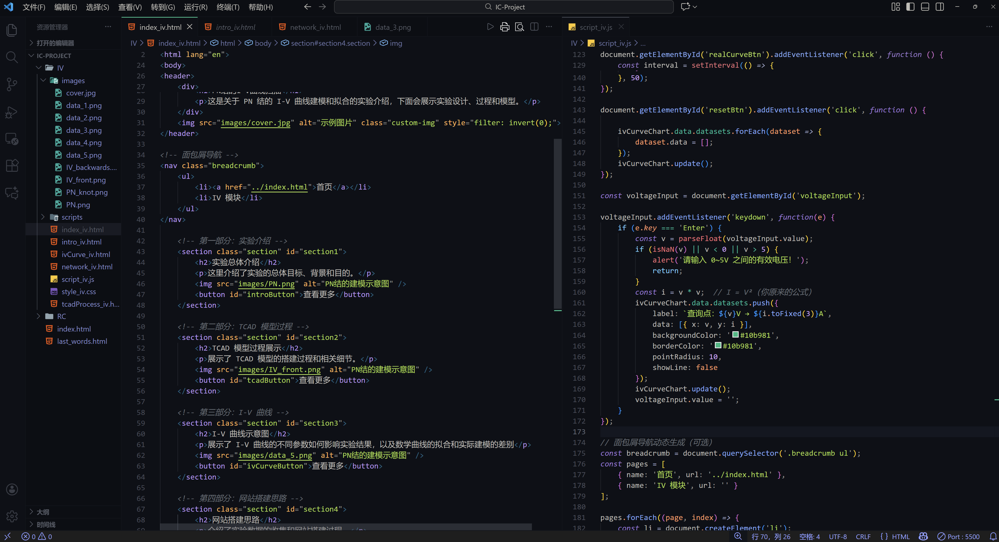

PN 结的建模与 I-V 曲线扫描
PN 结的 I-V 曲线扫描 - 通过 TCAD 仿真和数学建模，深入理解半导体器件的电气特性。

实验总体介绍
这里介绍了实验的总体目标、背景和目的。

TCAD 模型过程展示
展示了 TCAD 模型的搭建过程和相关细节。

I-V 曲线示意图
展示了 I-V 曲线的不同参数如何影响实验结果，以及数学曲线的拟合和实际建模的差别。

网站搭建思路
介绍了实验数据的收集和网站搭建过程。